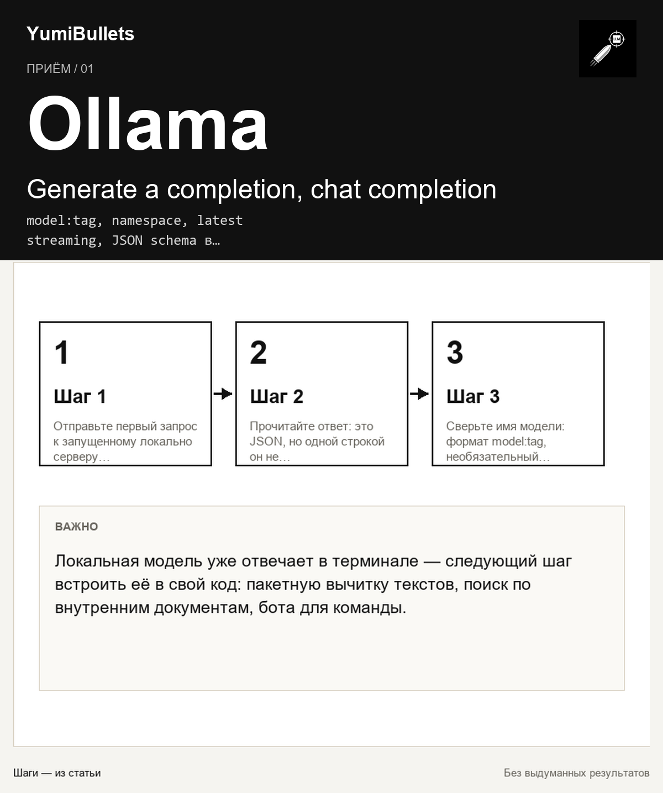

Ollama API: автоматизация генерации через HTTP
Локальная модель уже отвечает в терминале — следующий шаг встроить её в свой код: пакетную вычитку текстов, поиск по внутренним документам, бота для команды. Ниже маршрут от…

Локальная модель уже отвечает в терминале — следующий шаг встроить её в свой код: пакетную вычитку текстов, поиск по внутренним документам, бота для команды. Ниже маршрут от…